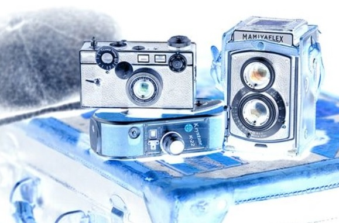
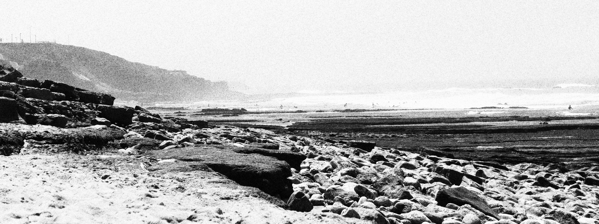
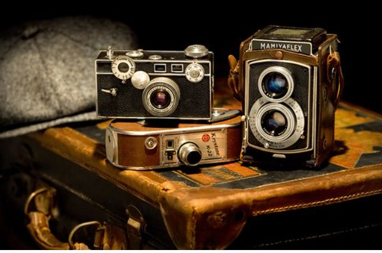

Sobre
A Jatobá Photos é um estúdio de fotografia, tratamento de imagem e design gráfico no Porto. Trabalhamos com atenção ao detalhe e ao carácter de cada história — da sessão à entrega final.
Photo
Quando fotografas pessoas a cores, fotografas as roupas. Quando as fotografas em preto e branco, fotografas as almas. Retratos, paisagem e sessões de autor, com uma linguagem clássica e contemporânea.

Retouch
O retouch é o cuidado invisível: cor, contraste, pele e atmosfera, sem apagar a verdade da fotografia. Tratamos cada ficheiro para impressão, redes ou arquivo, com um olhar editorial.

Design gráfico
O design gráfico dá forma à imagem: logótipos, cartazes, álbuns e peças para redes. Unimos fotografia e tipografia para que a comunicação fique tão nítida quanto o retrato.
O nosso escritório
Estamos no coração do Porto, na Rua de Dom João IV.